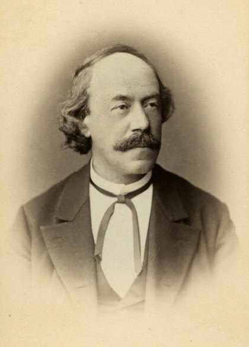
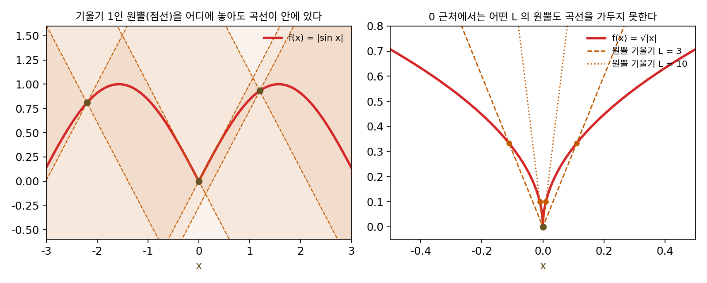
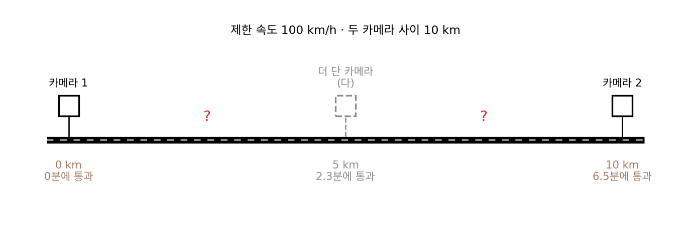
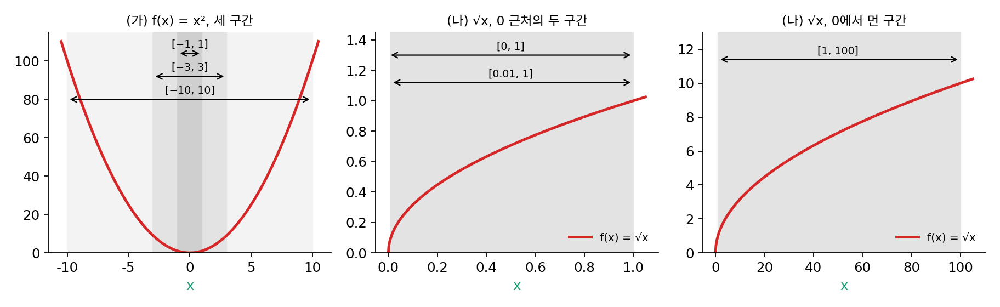
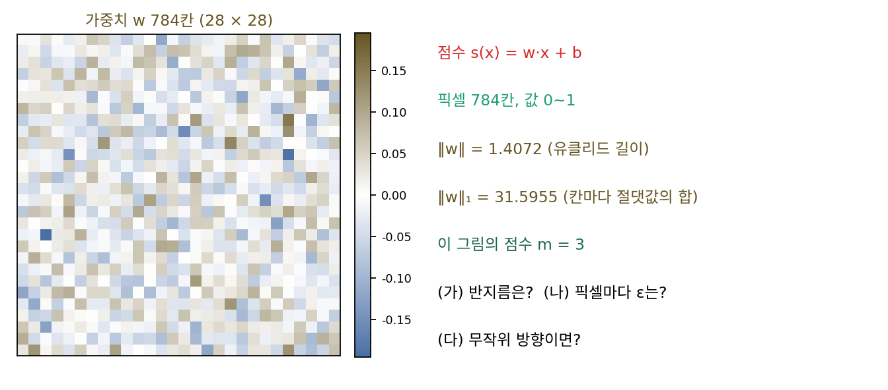

립시츠 연속: 함수가 얼마나 빨리 변할 수 있나
이 장의 물음
이미지 분류기를 학습시켜 본 사람이라면 한 번쯤 이런 그림을 보았을 것이다. 판다 사진에 사람 눈에는 보이지 않을 만큼 작은 노이즈를 더했더니, 잘 학습된 분류기가 그 사진을 긴팔원숭이라고 자신 있게 답한다. 입력은 거의 그대로인데 출력이 완전히 바뀐 것을 보면, 입력을 조금 바꿀 때 출력은 얼마나 많이 바뀔 수 있을까 하는 물음이 생긴다. 그 크기를 숫자 하나로 묶어 둘 수 있다면, 그 숫자는 신경망의 무엇이 정할까?
미분은 한 점 근처에서 함수가 얼마나 빨리 변하는지를 알려 주지만, 그 점 하나의 이야기일 뿐이다. 학습은 파라미터(학습으로 고치는 숫자들)를 여기저기로 옮기며 손실을 재고, 생성 모델은 노이즈 한 점을 수백 스텝에 걸쳐 그림 쪽으로 옮긴다. 어디로 가든 통하는 약속, 곧 「어느 두 점을 잡아도 이만큼 넘게 변하지는 않는다」는 약속이 필요하다.
그리고 되풀이의 문제가 있다. 계산기에 아무 수나 넣고 cos 단추를 계속 누르면, 처음에 무엇을 넣었든 화면의 숫자가 0.7390851…에 멈춘다. 같은 계산을 되풀이하면 어떤 때는 한 점으로 모이고, 어떤 때는 두 값 사이를 영영 오가고, 어떤 때는 멀리 날아간다. 무엇이 그 갈림길을 정할까?
이 장은 다음 물음에 차례로 답한다.
- 함수가 얼마나 빨리 변할 수 있는지를 숫자 하나로 묶으려면 어떻게 적을까? 미분 가능한 것과는 무엇이 다를까?
- 그래디언트 자체가 얼마나 빨리 변하는지를 묶으면, 1차 근사(접선)의 오차를 얼마로 막을 수 있을까?
- 신경망의 한 층, 곧 행렬 곱 하나는 입력을 최대 몇 배로 늘일까? 층을 쌓으면 그 배율은 어떻게 될까?
- 같은 계산을 되풀이할 때 한 점으로 모인다고 장담하려면 무엇이 필요할까?
- 생성 모델이 노이즈를 그림으로 옮기는 흐름에서, 출발점 하나가 움직이는 경로 하나를 정한다고 말하려면 무엇이 필요할까?
립시츠 연속: 두 점 사이의 기울기에 상한을 둔다
입력을 조금 바꿀 때 출력이 얼마나 바뀌는지 알고 싶으면, 학교에서 배운 대로 미분을 보면 될 것 같다. 미분이 2인 곳에서는 입력을 0.01 바꾸면 출력이 대략 0.02 바뀌지만, 미분값으로 한 이 근사는 그 점 근처에서만 맞고 미분값은 자리마다 다르다. 판다 사진의 노이즈처럼 「눈에 안 보일 만큼」이라는 크기가 정해져 있을 때, 그 크기 안에서 출력이 얼마나 바뀔 수 있는지를 한 번에 말하려면 자리마다 다른 미분값이 아니라 어디서나 통하는 상한 하나가 필요하다. 그런 상한을 어떻게 적을 수 있을까?
역사: 립시츠가 찾던 조건

이 상한에 이름을 남긴 사람은 독일의 수학자 루돌프 립시츠(Rudolf Lipschitz)다. 쾨니히스베르크에서 태어나 그곳 대학과 베를린에서 공부했고(베를린에서는 디리클레에게 배웠다), 1864년부터 세상을 떠날 때까지 본 대학에서 가르쳤다. 그가 이 상한 조건을 처음 쓴 것은 푸리에 급수를 다룬 1864년 논문이다. 어떤 함수를 사인과 코사인의 합으로 펼쳤을 때 그 합이 원래 함수로 돌아오는지를 따지면서, 두 점의 함숫값 차이가 두 점 사이 거리의 거듭제곱에 상수를 곱한 것보다 작으면 된다는 조건을 내놓았다.
더 널리 알려진 쓰임은 미분방정식이다. 립시츠는 1868년 이탈리아의 『순수·응용 수학 연보(Annali di Matematica)』에 실은 글에서, 처음 값이 주어진 미분방정식의 해가 있고 하나뿐이려면 무엇이 필요한지를 따졌다. 이 글은 1876년 프랑스의 『수학·천문학 회보(Bulletin des sciences mathématiques et astronomiques)』에 「주어진 미분방정식계를 완전히 적분할 가능성에 대하여」라는 제목으로 다시 실렸다. 립시츠는 머리에 「바로 이 목적을 가진 연구는 내가 아는 한 없다」고 적었는데, 프랑스어판에는 「지은이는 분명히 코시의 연구를 알지 못했다」는 주석이 붙어 있다. 오귀스탱 루이 코시가 1820년대 강의에서 비슷한 결과를 냈지만 그 내용이 다른 사람의 책에 불완전하게 정리되어 퍼졌던 탓이다. 립시츠가 그 글에서 함수에 건 조건이, 함숫값의 차이가 변수의 차이에 정해진 양수를 곱한 것을 넘지 않는다는 부등식이었다. 해가 하나뿐이라는 이야기는 이 장의 마지막 개념에서 다시 만난다. 여기서는 그 부등식 자체를 숫자로 들여다보자.

두 점 사이 기울기가 어떤 수를 넘지 않는다는 부등식은 지금은 교과서 앞쪽에 나오잖아요. 그걸 1868년에 새로 내놓아야 했어요?

코시가 1820년대 강의에서 비슷한 결과를 냈다고 했죠. 그런데 립시츠는 왜 40년 뒤에 「내가 아는 한 없다」고 적었을까요?

음, 코시의 강의를 직접 듣지 않았다면 읽을 데가 있어야 하는데… 그 내용이 다른 사람의 책에 불완전하게만 정리됐다고 했으니까, 제대로 된 글이 없었던 거네요.

그래요. 지금은 논문 검색으로 「이 결과가 이미 있나」를 몇 분이면 확인하지만, 립시츠에게는 그런 수단이 없었어요. 둘이 겹친다는 사실은 1876년 프랑스어판에 붙은 주석이 짚었고요.

그러면 립시츠는 코시를 모른 채 다른 길로 같은 데 닿은 거네요. 남이 이미 낸 과제를 모르고 처음부터 다시 푼 것처럼요.

그런데 1864년 푸리에 급수 논문의 조건은 「거리의 거듭제곱」이었고, 1868년 것은 「거리에 상수를 곱한 것」이잖아요. 거듭제곱이 1이 아니면, 예를 들어 √|x| 같은 함수는 두 조건 가운데 어느 쪽에 들어가요?
|sin x| 와 √|x|: 둘 다 꺾였는데 무엇이 다른가
상한을 시험하려면 미분만으로는 구별이 안 되는 두 함수를 비교하는 것이 좋다. f(x) = |sin x|와 f(x) = √|x|는 둘 다 연속이고, 둘 다 x = 0에서 꺾여 미분할 수 없다. 미분 가능하냐고 물으면 둘은 같은 답을 낸다. 그러면 「두 점 사이의 기울기」, 곧 함숫값의 차이를 두 점 사이 거리로 나눈 값을 직접 재 보자. 0과 h 두 점을 잡는다.
| h | |sin h| ÷ h | √h ÷ h |
|---|---|---|
| 1 | 0.8415 | 1.0 |
| 0.1 | 0.9983 | 3.2 |
| 0.01 | 1.0000 | 10.0 |
| 0.0001 | 1.0000 | 100.0 |
| 0.000001 | 1.0000 | 1000.0 |
|sin x|의 두 점 사이 기울기는 아무리 가까운 두 점을 잡아도 1을 넘지 않는다. 0.5와 0.51이면 0.8752, 2와 2.01이면 0.4207이고, 0을 사이에 둔 −0.3과 0.3이면 0이다. 구간 [−3, 3]을 6,001개의 점으로 나눠 모든 쌍을 재도 가장 큰 값은 1.0000이다. 반면 √|x|는 0에 가까운 점을 잡을수록 기울기가 1/√h로 끝없이 커진다. 같은 격자에서 가장 큰 값은 61개 점일 때 3.16, 601개일 때 10.0, 6,001개일 때 31.6으로, 점을 촘촘히 할수록 계속 올라간다. 0에서 멀리 떨어진 곳, 예를 들어 1과 4 사이는 0.333으로 얌전하다. 말썽은 한 점 근처에만 있다.
둘의 차이는 그림으로 보면 분명하다. 곡선 위 한 점에 기울기가 ±L인 두 직선을 그어 원뿔(옆에서 보면 X자)을 만들자. 두 점 사이의 기울기가 L을 넘지 않는다는 말은, 원뿔을 곡선 위 어느 점에 놓아도 곡선 전체가 원뿔 안쪽에 들어 있다는 말과 같다.

이렇게 어느 두 점을 잡아도 함숫값의 차이가 두 점 사이 거리의 L배를 넘지 않는 함수를 립시츠 연속 (두 점 사이 기울기에 상한이 있는 함수 / Lipschitz continuous)이라 하고, 그런 L 가운데 가장 작은 것을 립시츠 상수라 한다. |sin x|의 립시츠 상수는 1이고, √|x|는 0을 포함한 구간에서 립시츠 연속이 아니다. 입력과 출력이 벡터이면 차이를 유클리드 길이 ‖·‖로 잰다.
립시츠 연속은 미분 가능성과는 서로 다른 성질이어서, |sin x|는 0에서 미분할 수 없지만 립시츠 연속이다. 거꾸로 어디서나 미분할 수 있으면 늘 립시츠 연속인지는 x²으로 아래 문제 2에서 따져 본다. 미분할 수 있는 함수라면 립시츠 상수는 미분값의 크기의 상한과 같은데, 두 점 사이의 기울기는 그 사이 어딘가의 미분값과 같기 때문이다(평균값 정리). 립시츠 연속은 「미분이 어디서나 정해진 상한을 넘지 않는다」를 꺾인 점이 있는 함수까지 넓힌 말이다.
ML에서: 눈에 안 보이는 노이즈는 왜 답을 바꿀까
분류기가 두 부류를 가를 때 쓰는 점수 s(x)를 생각하자. 점수가 양수면 판다, 음수면 다른 것이다. 지금 사진에서 점수가 m이고 점수 함수의 립시츠 상수가 L이면, 입력을 δ(델타)만큼 바꿀 때 점수는 L‖δ‖보다 많이 줄지 못한다. 그러니 ‖δ‖ < m/L인 노이즈로는 어떻게 해도 답을 뒤집을 수 없고, 이 반지름 m/L을 견고성 반지름이라 부른다. 여유 m을 키우거나 L을 줄이면 반지름이 넓어진다.
판다 사진은 이안 굿펠로(Ian Goodfellow)와 동료들의 2015년 논문 「적대적 예제를 설명하고 활용하기(Explaining and Harnessing Adversarial Examples)」의 첫 그림이다. 그들은 이런 노이즈가 생기는 것이 신경망이 지나치게 구불구불해서가 아니라 오히려 선형에 가깝기 때문이라고 설명했다. 입력의 칸이 수십만 개이면, 칸마다 아주 조금씩 바꾼 것이 모두 같은 쪽으로 더해져 점수를 크게 움직인다. 이 계산은 아래 문제 3에서 직접 해 본다.
문제 1. 구간 단속 카메라
고속도로의 구간 단속은 10 km 떨어진 두 카메라를 지난 시각만 보고, 제한 속도 100 km/h를 넘었는지 판단한다. (가) 두 카메라 사이를 5분, 6분, 6.5분에 지난 차의 평균 속도는? (나) 6.5분에 지난 차는 한순간도 100 km/h를 넘지 않았다고 말할 수 있는가? (다) 카메라를 5 km 지점에 하나 더 달았더니, 이 차가 0 km, 5 km, 10 km 지점을 0분, 2.3분, 6.5분에 지났다. 무엇을 알 수 있는가?

(가)는 10 km를 5분, 6분, 6.5분에 갔으니까 120, 100, 92.3 km/h예요.
6.5분에 지난 차는 평균이 92.3이에요. 처음 3분을 130 km/h로 달렸다면, 남은 거리를 어떻게 달려야 6.5분이 될까요?
130으로 3분이면 6.5 km를 가요. 남은 3.5 km를 3.5분에 가면 되니까 60 km/h로만 가면 되네요. 평균은 92.3인데 130까지 밟을 수 있어요. 그러니 (나)는 「말할 수 없다」예요.
(다)에서 0 → 5 km는 130.4 km/h, 5 → 10 km는 71.4 km/h야. 카메라 하나 더 달았더니 과속이 보여. 두 지점 사이의 평균 속도는 「두 점 사이의 기울기」니까, 카메라 쌍 하나는 기울기 하나만 재는 거구나.
그러면 「이 차는 어느 순간에도 100 km/h를 넘지 않았다」를 카메라로 확인하려면 몇 쌍을 재야 할까요?

몇 쌍이면 될까… 카메라를 아무리 촘촘히 달아도 그 사이에서 밟을 수 있잖아요. 그럼 모든 두 지점 쌍이요?
「모든 쌍의 평균 속도가 100 이하」를 위치의 함수로 말하면요?

어느 두 시각 사이의 기울기도 100을 넘지 않는다… 립시츠 상수가 100 이하라는 말이네요.
그럼 몇 쌍만 잰 건 쓸모가 없어?
하한은 알 수 있어. 쌍 하나에서 130이 나오면 상수가 적어도 130이라는 건 확실한데, 92.3이 나왔다고 상수가 100 이하라는 건 아니고.
그래요. 몇 쌍으로는 상수의 하한만 얻어요. 립시츠 상수는 모든 쌍에 대한 상한이에요.
문제 2. 같은 함수, 다른 구간
(가) f(x) = x²의 립시츠 상수를 구간 [−1, 1], [−3, 3], [−10, 10]에서 구하라. 수직선 전체에서는 어떤가? (나) √x는 [1, 100]에서 립시츠 연속인가? [0.01, 1]에서는? [0, 1]에서는? (다) 립시츠 상수를 정하는 데 구간이 왜 중요한가?

x²은 어디서나 미분 가능하고 매끄러우니까 립시츠 연속이겠죠. 미분이 2x니까… 상수는 2요?
[−3, 3]에서 이웃한 두 점의 기울기를 재 보면 얼마가 나오죠?

5.9997이요. 2가 아니네요. [−10, 10]에서는 19.999예요. 어, 둘 다 구간 끝의 기울기에 가까워요. 미분 2x의 크기가 구간 끝에서 가장 크니까 상수가 2a예요.
그럼 수직선 전체에서는요?
구간을 넓히면 끝없이 커지니까 립시츠 연속이 아니에요. 매끄러운 거랑 상관없었어요.
(나)는 √x의 미분이 1/(2√x)이니까, [1, 100]에서는 x = 1일 때 가장 커서 0.5야. [0.01, 1]에서는 1/(2 × 0.1) = 5. 그런데 [0, 1]이면 0 근처에서 미분이 끝없이 커지니까 상수가 없어.

두 함수가 망가지는 곳이 다르죠?

x²은 멀리 갈수록, √x는 0에 다가갈수록 기울기가 커져요. 립시츠 상수는 구간 안에서 가장 가파른 곳이 정하니까, 가파른 곳을 구간에서 빼면 상수가 생기고 넣으면 사라져요. 「구간에서」라는 단서를 빼고 상수를 말하면 안 되네요. 해석학에서 연속인 함수가 닫힌 구간에서는 최댓값을 꼭 갖는다고 배운 거랑 같은 결이에요.
문제 3. 선형 분류기의 견고성 반지름
28 × 28 흑백 그림(픽셀 784칸, 값 0~1)을 두 부류로 가르는 선형 분류기의 점수가 s(x) = w·x + b다. 가중치 w는 평균 0, 표준편차 0.05에서 뽑았고(씨앗 고정) ‖w‖ = 1.4072, 칸마다의 절댓값을 더한 ‖w‖₁ = 31.5955이다. 어느 그림의 점수가 m = 3이다. (가) 이 점수 함수의 립시츠 상수(유클리드 길이 기준)는? 견고성 반지름은? (나) 픽셀마다 같은 크기 ε만큼만 바꿀 수 있다면, 답을 뒤집는 데 필요한 ε는? 픽셀 밝기를 255단계로 보면 몇 단계인가? (다) 무작위 방향으로 (가)의 반지름만큼 움직이면 점수는 얼마나 바뀌는가?

(가)는 s(x) − s(y) = w·(x − y)니까 상수는 ‖w‖ = 1.4072, 반지름은 3/1.4072 = 2.13이에요. 픽셀 784칸짜리 그림에서 길이 2.13이면 꽤 큰 변화니까 이 분류기는 튼튼한 거죠.
그 길이 2.13을 픽셀마다 나눠 가지면 한 픽셀은 얼마나 바뀌죠? (나)를 계산해 보세요.
모든 픽셀을 w의 부호 반대로 ε씩 바꾸면 점수가 ε‖w‖₁만큼 줄어요. 3/31.5955 = 0.095, 255단계로는 24단계예요. 흑백 그림에서 24단계는 눈에 띄긴 하지만… 이 정도로 답이 뒤집힌다니요. 이때 유클리드 길이는 2.66이고요.
칸이 784개라서 그래. 한 칸의 변화는 작아도 784개가 모두 점수를 같은 쪽으로 미니까 더해져. 칸이 수십만 개인 컬러 사진이면 칸마다 필요한 변화가 훨씬 작아질 거고.
그럼 (다)는요? 같은 길이 2.13을 아무 방향으로나 움직이면요?

1000번 해 봤는데 점수가 가장 낮을 때도 2.68이고 평균은 처음 점수 3.00과 같아요. 거의 안 움직여요.

같은 길이 2.13으로 움직였는데 왜 (가)랑 이렇게 달라?
점수가 바뀌는 건 w 방향 성분뿐이잖아. 784차원에서 무작위 방향은 w와 거의 수직인가 봐. 그래서 점수를 못 움직여.
그러니까 립시츠 상수는 가장 나쁜 방향 하나에 대한 약속이고, 노이즈를 만드는 사람은 바로 그 방향을 골라 오는 거네요.
보통 노이즈에는 끄떡없는데 일부러 만든 노이즈에는 무너지는 게 이래서였네요. 비밀번호를 아무렇게나 눌러서 맞힐 확률은 거의 0인데, 키보드에 남은 손자국을 보고 누르면 금방 맞히는 거랑 같아요.